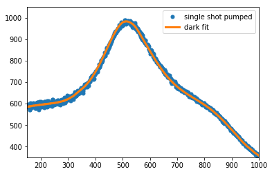
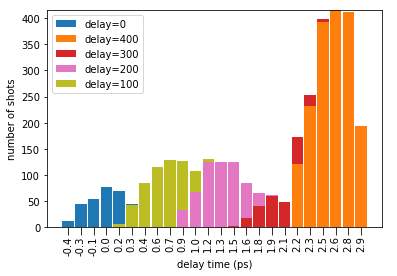

The data for this particular SACLA run can be found here. Email damende3@asu.edu if you cannot download!
In this notebook we detail how to analyze the time-tool data.
The SACLA time tool reads out a precise delay time per FEL exposure, and we can use this to precisely observe changes in the scattering in time.
A paper on the SACLA time-tool calibration is found here.
%matplotlib inline
import glob
from collections import Counter
import h5py
import pandas
import numpy as np
import pylab as pltrun = 656748
h5 = h5py.File('r%d/radials.h5'%run, 'r')
print( h5.keys())[u'dark', u'pumped']print(h5["pumped"].keys())[u'Qrads', u'olaser_delay', u'olaser_volt', u'photon_energy', u'pulse_energy', u'radials', u'tag', u'xlaser_joule_bm_1', u'xlaser_joule_bm_2']# nominal delay values
# Each unit corresponds to roughly 6.6 femtoseconds
# and time 0 is roughly olaser_delay=0
delay_vals = h5['pumped']['olaser_delay'].value # optical laser delay stage valuepumped_tag = h5['pumped/tag'].value
order = np.argsort( pumped_tag)
print pumped_tag.shape, delay_vals.shape
plt.plot( pumped_tag[order], delay_vals[order], '.', ms=2)
# watch how we changed the delay during this run
# negative stage olser_delay means(14423,) (14423,)
[<matplotlib.lines.Line2D at 0x1161e8510>]# Now those are the nominal delay values
# We wish to make the time delay more precise by using the
# sub picosecond time-tool at SACLA
# This data is in the TMA results.CSV file(s) provided by SACLA
results = glob.glob("TMA/*/results.csv") # there are multiple files for different parts of the experiment# this is the title row in each results.CSV
cols = 'tagNumber,time_of_getting_image[msec/tag],time_of_detection[msec/tag],time_of_writing_to_udb[msec/tag],deriv_edge,fit_edge,memory_used[MB/core]'.split(
',')
print(cols)['tagNumber', 'time_of_getting_image[msec/tag]', 'time_of_detection[msec/tag]', 'time_of_writing_to_udb[msec/tag]', 'deriv_edge', 'fit_edge', 'memory_used[MB/core]']# load the data from each results.CSV file and store in a large array
data = np.vstack(
[np.loadtxt(r, skiprows=1, delimiter=',') for r in results ])
# convert the array data to a pandas dataframe
df = pandas.DataFrame(columns=cols, data=data) # this is the tma data for the entire experiment# lets query the tma data for the particular run
# first, we find the minimum and maximum tag number in our experimental data h5 file
tags = np.hstack( (h5['dark']['tag'].value, h5['pumped']['tag'].value))
tmin, tmax = tags.min(), tags.max()
# then we query the time-tool dataframe
df_run = df.query("tagNumber >= %d and tagNumber <= %d" % (tmin, tmax))
print ("%d shots in run %s"%(len( df_run), h5.filename) )20000 shots in run r656748/radials.h5# Now , we should merge this TMA data frame with the experimental data in the hdf5 file
pumped = h5['pumped']
dark = h5['dark']
# These are the relevant bits of the files, in particular the energy, radials and tag number
df_pumped_h5data = pandas.DataFrame({'radials': list(pumped['radials'].value),
'tagNumber': pumped['tag'].value, # note we keep same name tagNumber as the TMA data for merging
'olaser_delay': pumped['olaser_delay'].value,
'pulse_energy': pumped['pulse_energy'].value,
'photon_energy': pumped['photon_energy'].value,
'olaser_volt': pumped['olaser_volt'].value,
'xlaser_joule_bm_1': pumped['xlaser_joule_bm_1'].value})
# the dame for the dark data
df_dark_h5data = pandas.DataFrame({'radials': list(dark['radials'].value),
'tagNumber': dark['tag'].value, # note we keep same name tagNumber as the TMA data for merging
'olaser_delay': dark['olaser_delay'].value,
'pulse_energy': dark['pulse_energy'].value,
'photon_energy': dark['photon_energy'].value,
'olaser_volt': dark['olaser_volt'].value,
'xlaser_joule_bm_1': dark['xlaser_joule_bm_1'].value})
#NOTE: we made pumped[radials] a list, this is slightly abusing the pandas philosophy
# but it is quite convenient because we can keep all the parameters aligned
# when we analyze the radials
# NOTE: if radials is left as a numpy array pandas will raise an exception# We can join the pumped and dark dataframes into one
# To do so, we first create a boolean column called pumped
df_pumped_h5data['pumped'] = True
df_dark_h5data['pumped'] = False
# then we can concatenate
df_h5 = pandas.concat( (df_pumped_h5data, df_dark_h5data))print (list(df_h5), len(df_h5))(['olaser_delay', 'olaser_volt', 'photon_energy', 'pulse_energy', 'radials', 'tagNumber', 'xlaser_joule_bm_1', 'pumped'], 19230)# Now we can merge the hdf5 dataframe with the SACLA time tool dataframe
df_main = pandas.merge(df_run, df_h5, on='tagNumber') # NOTE: pandas does an inner merge by default
print( list(df_main), len( df_main))(['tagNumber', 'time_of_getting_image[msec/tag]', 'time_of_detection[msec/tag]', 'time_of_writing_to_udb[msec/tag]', 'deriv_edge', 'fit_edge', 'memory_used[MB/core]', 'olaser_delay', 'olaser_volt', 'photon_energy', 'pulse_energy', 'radials', 'xlaser_joule_bm_1', 'pumped'], 19230)# During the experiment, as the optical laser delay stage was translated,
# the olaser_delay values being read out changed continuously.
# This was because the time to jump from one delay stage value to another
# was much longer than the time between shots.
# Therefore, we need to isolate the fixed values of olaser_delay in order
# to query the nominal delay values.
# Usually, if a value is read out 10+ times in a row, it's considered a fixed value
all_olaser_vals = Counter( df_main.olaser_delay.values)
print (all_olaser_vals.items() ) # (olaser_value, frequency) pairs
[(0, 971), (1, 1), (3, 1), (-508, 1), (5, 1), (-502, 1), (11, 1), (-424, 1), (19, 1), (-488, 1), (30, 1), (-681, 1), (43, 1), (-800, 1631), (46, 1), (-464, 1), (57, 1), (-453, 1), (70, 1), (-439, 1), (80, 1), (-427, 1), (88, 2), (94, 1), (-417, 1), (98, 1), (99, 1), (100, 859), (101, 1), (-410, 1), (104, 1), (-404, 1), (110, 1), (-401, 1), (-400, 974), (-201, 1), (-398, 1), (118, 1), (-388, 1), (127, 2), (-383, 1), (-379, 1), (140, 1), (-368, 1), (-630, 1), (410, 1), (154, 1), (-354, 1), (-656, 1), (163, 1), (167, 1), (-340, 1), (-339, 1), (178, 1), (-328, 1), (187, 1), (193, 1), (-318, 1), (197, 1), (198, 1), (199, 1), (200, 1074), (-310, 1), (203, 1), (-305, 1), (208, 1), (-302, 1), (-300, 991), (-298, 1), (215, 1), (-295, 1), (-292, 1), (224, 1), (-799, 1), (-798, 1), (-797, 1), (-794, 1), (-793, 1), (-280, 1), (236, 1), (-787, 2), (-269, 1), (-778, 2), (250, 1), (-256, 1), (-767, 2), (-469, 1), (260, 1), (263, 1), (-244, 1), (-242, 1), (-211, 1), (275, 1), (-229, 1), (284, 1), (-739, 1), (-738, 1), (288, 1), (291, 1), (-219, 1), (296, 1), (299, 1), (300, 958), (301, 1), (-722, 1), (-720, 1), (305, 1), (-205, 1), (-202, 1), (311, 1), (-200, 998), (-199, 1), (314, 1), (-195, 1), (-193, 1), (320, 1), (-288, 1), (-190, 1), (-701, 1), (330, 1), (-181, 1), (338, 1), (-171, 1), (343, 1), (-680, 1), (-112, 1), (-158, 1), (357, 1), (359, 1), (-663, 1), (231, 1), (-144, 1), (370, 1), (-141, 1), (-647, 1), (378, 2), (380, 1), (-131, 1), (387, 1), (388, 1), (-634, 1), (-121, 1), (393, 1), (394, 1), (395, 1), (-702, 1), (398, 2), (399, 1), (400, 3320), (-623, 1), (-754, 2), (-106, 1), (-102, 1), (-101, 1), (-100, 1008), (-99, 1), (-96, 1), (-607, 1), (-603, 1), (-90, 2), (-601, 2), (-600, 984), (-599, 1), (-596, 1), (-82, 1), (432, 1), (-590, 1), (440, 1), (-71, 1), (-582, 1), (446, 1), (449, 1), (450, 5273), (-572, 1), (-59, 1), (-570, 1), (-394, 1), (-559, 1), (-45, 1), (-42, 1), (-545, 1), (-32, 1), (422, 1), (-538, 1), (-21, 1), (-527, 1), (-13, 1), (-1, 1), (-614, 1), (-6, 1), (-2, 1)]good_delays = [k for k, v in all_olaser_vals.items() if v > 10]
print ( good_delays) # store these numbers for later use in analysis queries[0, -800, 100, -400, 200, -300, 300, -200, 400, -100, -600, 450]# Above are the nominal delay values that were set during this run
# (remember, the units correspond to roughly 6.6 picoseconds of delay)
# We can calculate the time-delay per shot using the fit_edge from the time-tool data
# Lets look at the time tool fit_edge position across the run
df_main.fit_edge.hist(bins=100)<matplotlib.axes._subplots.AxesSubplot at 0x11aba7390># Looks like some outliers near edge positions 1000, so lets give a modest crop to the fit_edge
df_main = df_main.query('fit_edge > %d and fit_edge < %d' % (500, 850))
df_main.fit_edge.hist( bins=100)<matplotlib.axes._subplots.AxesSubplot at 0x11c61ae50># lets watch how this fit_edge is changing in time by sorting according to tagNumber
plt.plot( df_main.fit_edge[np.argsort(df_main.tagNumber)], '.', ms=1)[<matplotlib.lines.Line2D at 0x11ccba3d0>]# It looks like the fit_edge is pretty uniform across this sun,
# Therefore, we can assume the average fit_edge is the nominal time delay.
# The correction to the time delay is ~3 femtosecond per fit_edge
# and arrival timing increases with fit_edge
df_main['time_adjust'] = (df_main.fit_edge - df_main.fit_edge.mean()) * 0.003# now , we commpute the per-shot time delay: (olaser_delay unit is roughly 6.6 femtoseconds)
df_main['delay_time'] = df_main.olaser_delay * 0.0066 + df_main.time_adjust# lets save this dataframe
df_main.to_pickle("run%d_main.pkl"%run)# the dataframe is quite useful
# e.g. to plot the average pumped radial profile
plt.plot( df_main.query("pumped==True").radials.mean(0) )
# The next notebook explains how to do detailed analysis[<matplotlib.lines.Line2D at 0x11ab54410>]Here we describe how to subtract dark radial profiles from pumped radial profiles.
%matplotlib inline
import pandas
import numpy as np
import pylab as plt
from IPython.display import clear_output
from scipy import optimize
# lets load the dataframe we made in the previous ipython notebook (tma_analysis_sacla.ipynb)
df = pandas.read_pickle("run656748_main.pkl")# We wish to compute difference-radial profiles at different time delays
#The first step is filtering all the profiles
# (removing bad shots or shots with outlier parameters)
#We can easily filter shots according to a photon energy bandpass
#First, however, we should see the spectrum!
df.photon_energy.hist(bins=30)<matplotlib.axes._subplots.AxesSubplot at 0x12d76ea90>energy_rng = (9955, 9980)
df_bandpass = df.query("%.5f < photon_energy < %.5f"%energy_rng)#Now lets filter according to signal to background level
#We will make a function to do this
def filter_radials( df,
bg_rng,
sig_rng,
thresh=1.3):
"""
this filters radials that have a weak signal
df, pandas dataframe
bg_rng, tulple defininig where the background signal is
sig_rng, tuple defining where the signal is (e.g. water ring)
thresh, only keep radials if signal is greater than background by
this fraction
returns a filtered pandas dataframe
"""
assert( bg_rng[1] > bg_rng[0])
assert( sig_rng[1] > sig_rng[0])
# background and signal slices
bg_slc = slice( bg_rng[0], bg_rng[1],1)
sig_slc = slice( sig_rng[0], sig_rng[1], 1)
# load the radial stack
rads = np.vstack(df.radials.values)
# define the signal to background levels for each radial profile
sig = rads[ :, sig_slc].mean(axis=1)
bg = rads[ :, bg_slc].mean(axis=1)
lvl = sig/bg
is_good = lvl > thresh
df_good = df.loc[is_good]
print("func `filter_radials`: \
\n\tKeeping %d / %d rads"%(sum( is_good), len( df)))
df_bad = df.loc[~is_good]
return df_good, df_bad
# lets plot the average radial to visually check good ranges for background and signal
plt.plot( df_bandpass.radials.mean(0))
plt.xlim(150,1000) # zoom into the relvant bits(150, 1000)# based on the above plot, we choose regions of interest:
bg_rng = (180,220) # radial pixel values of background
sig_rng = (510,550) # radial pixel values of signal
df_kept, df_removed = analyze_radials.filter_radials(df_bandpass,
bg_rng=bg_rng,
sig_rng=sig_rng,
thresh=1.2)func `filter_radials`:
Keeping 6030 / 13851 rads# lets plot the filtered and removed profiles to compare
plt.plot( df_kept.radials.mean(0), label='kept')
plt.plot( df_removed.radials.mean(0), label='removed')
plt.legend()<matplotlib.legend.Legend at 0x11b8e84d0># now it is a good idea to start doing the pumped and dark difference profiles
# To do this , first gather the darks
df_dark = df_kept.query("pumped==False")
# We are interested in computing difference profiles at various time delays
# We can find pumped profiles at a given time delay using a basic query:
df_pumped_2ps = df_kept.query("1.75 < delay_time < 2.25 ").query("pumped==True")# lets plot the 2ps pumped and dark profiles
plt.plot( df_pumped_2ps.radials.mean(0), label="pumped")
plt.plot( df_dark.radials.mean(0), label="dark")
plt.xlim(150,1000) # zoom into the relvant bits
plt.ylim(250,950)
plt.legend()<matplotlib.legend.Legend at 0x11fa9ae50># note how they appear to differ in scale
# This could be due to intensity fluctutions or jet fluctuations, its hard to say for sure
# We can just look at the dark shots that were measured
# around the same time as the pumped shots:
tagmin, tagmax = df_pumped_2ps.tagNumber.min(), df_pumped_2ps.tagNumber.max()
df_dark_concurrent = df_dark.query( "%d < tagNumber < %d"%(tagmin, tagmax))
# and plot
plt.plot( df_pumped_2ps.radials.mean(0), label="pumped")
plt.plot( df_dark_concurrent.radials.mean(0), label="dark")
plt.xlim(150,1000) # zoom into the relvant bits
plt.ylim(250,950)
plt.legend()<matplotlib.legend.Legend at 0x11f892d90># Note, they are still off slightly..
# It could be the pumped profiles have more signal in general
# , however it could be other factors which are unaccounted for
# We can get more fancy with the subtraction...
#####################################
# Lets run SVD on all the dark vectors
# and then use (for differencing) linear
# fits of those most prominant singular
# vectors to each individual pumped profile
####################################
# Here we do the singular decomp:
dark_stack = np.vstack(df_dark.radials.values)
U,s,VT = np.linalg.svd( dark_stack.T, full_matrices=False)
# two most prominant dark singular vectors
v0 = U[:,0]*s[0]
v1 = U[:,1]*s[1]
vecs = [v0,v1]
# we can plot the singular values to check prominance
plt.plot( s, 'o')
plt.gca().set_yscale("log")# looks like 2-sh dominant components, hence why we only kept two
# We wish to fit a linear combination of the vectors to each pumped profile
# We can fit the linear combination, but we need a good initial condition
# Lets let the initial condition be the average right singular vectors
c0 = VT[0].mean()
c1 = VT[1].mean()
# Here is a plot of the residual of the SVD reconstruction
# to the original dark vector
# using our guessed coefficients
plt.plot(df_dark.radials.mean(0) - v0*c0 -v1*c1 )
# Note this residual is on top of roughly 1000 y-axis units
[<matplotlib.lines.Line2D at 0x11fc0d350>]# seems like a good initial guess for our parameters,
# as the pumped profiles area actually very close in scale to the darks
# Now lets see what happens if we fit these vecs to a pumped profile
# first we define residual least squares function
def opt_func(coeffs, vecs, pumped):
"""
coeffs, tuple of parameters
vecs, the dark sigular vectors [ U[:,0]*s[0], U[:,1]*s[1], ... ]
pumped, a pumped radial profile, could be average or individual shot
returns the sum of squared residuals
"""
linear_comb_of_vecs = _get_linear_comb( coeffs, vecs)
resid = pumped - linear_comb_of_vecs
return np.sum(resid**2)
def _get_linear_comb(coeffs, vecs):
"""
Returns a linear combination of vectors based on params.
coefs must be N+1 long where N is the length
of vecs. The extra coef (at the end of the list)
is a constant offset to the fit
coeffs, same linear coeffs passed to opt_func
vecs, same dark_vecs passed to opt_func
"""
linear_comb = np.zeros_like(vecs[0])
for v,c in zip( vecs, coeffs[:-1] ):
linear_comb += v*c
linear_comb += coeffs[-1]
return linear_comb
# Now, this is a single shot radial profile
pumped_radial = df_pumped_2ps.radials.iloc[0]
# lets fit some dark singular vectors to it
init_params = (c0,c1,coffset)
fit = optimize.minimize( opt_func, init_params , args=( [v0,v1], pumped_radial ), method='Nelder-Mead')
dark_fit = _get_linear_comb( fit['x'], [v0,v1])# lets check out fit
plt.plot( pumped_radial, 'o', ms=5 ,label='single shot pumped')
plt.plot( dark_fit, lw=3, label='dark fit')
plt.xlim(150,1000)
plt.ylim(350,1050)
plt.legend()<matplotlib.legend.Legend at 0x11f6b6810>
# Now we can apply this to each pumped profile
# Since we will use this multiple times, lets make a function
def fit_darks_to_pumps(df_pumped,
x0=(c0,c1,coffset),
vecs = [v0,v1],
method='Nelder-Mead',
fun=opt_func):
"""
Loop over pumped profiles , fitting a dark profile to each one
returns a results dictionary with many useful parameters,
in perticular the optimized difference profile per shot
The lists in the dictionary values are aligned to the dataframe indices
"""
results = {}
results['dark_fits'] = []
results['differences'] = []
results['success'] = []
results['residuals'] = []
for i_pumped, pumped in enumerate(df_pumped.radials):
if i_pumped %50==0:
clear_output(wait=True)
print ("Pumped %d/ %d"%(i_pumped+1, len(df_pumped)))
dark_fit, fit = _get_dark_fit( pumped, x0,vecs,method,fun)
results['dark_fits'].append( dark_fit)
results['residuals'].append( fit['fun'])
results['success'].append( fit['success'])
results['differences'].append( pumped - dark_fit)
clear_output()
print("Done!\n")
return results
def _get_dark_fit(pumped_profile, x0, vecs, method, fun):
"""
fit vector combination to a pumped profile
returns tuple of (fitted_profile, fit_results)
fit_results is the output of the scipy optimize method
"""
fit = optimize.minimize(fun=fun,
x0=x0,
args=(vecs, pumped_profile),
method=method)
dark_fit = _get_linear_comb( fit['x'], vecs)
return dark_fit, fitresults = fit_darks_to_pumps(df_pumped_2ps)Done!# lets compare some various normalizations
# no norm
plt.plot( df_pumped_2ps.radials.mean(0) - df_dark.radials.mean(0), label='no normalization')
# scale by water peak
pumped_stack = np.vstack( df_pumped_2ps.radials.values)
dark_stack = np.vstack(df_dark.radials.values)
# normalize the pumped by the water peak
pumped_water_peak = pumped_stack[:, 510:550].max(1)
pumped_stack /= pumped_water_peak[:,None]
# same for darks
dark_water_peak = dark_stack[:, 510:550].max(1)
dark_stack /= dark_water_peak[:,None]
plt.plot( (pumped_stack.mean(0) - dark_stack.mean(0) )*pumped_water_peak.mean() , label="simple normalization")
plt.plot( np.mean( results['differences'],0), label="SVD norm")
plt.legend()
plt.xlim(50,1050)(50, 1050)# looks like the SVD fit works nicely# This is our result for the difference profile
plt.plot( np.mean( results['differences'],0))
plt.xlim(50,1050)
# this seems reasonable like we expect from previous experiments(50, 1050)# Lets make a difference profile for each pumped profile in the run
df_all_pumped = df_kept.query("pumped==True").copy()
results = fit_darks_to_pumps( df_all_pumped)
# this might take a minute!Done!# At this point, we should create a new dataframe that has all
# of the difference profiles stored in it
# That way, we can begin analyzing how the difference is changing with delay time
df_all_pumped['differences'] = results['differences']
df_all_pumped['residuals'] = results['residuals']
df_all_pumped['dark_fits'] = results['dark_fits']
df_all_pumped['success'] = results['success']
df_all_pumped.to_pickle("run656748_all_pumped.pkl")
Now that we have 1) computed the precise time-delay per shot, and 2) computed the proper dark-subtraction per shot, we can analyze the difference profiles in time.
# in the previous notebook we optimized a method for fitting dark
# profiles to each pumped profile, in order to effectively
# obtain the difference scattering.
# Now, we can analyze how that difference scattering is changing with
# optical laser timing (time delay)
# Remember, this run we are analyzing represents opsin scattering,
# and in theory opsin is a photo-inactive protein, so any changes
# we observe in the difference scattering should indicate solvent
# heating effects and other experimental factors
%matplotlib inline
import pandas
import numpy as np
import pylab as plt# Lets load the dataframe we created in the last notebook
# This dataframe has difference profiles in it!
df = pandas.read_pickle("run656748_all_pumped.pkl")
print( list(df), len(df) )(['tagNumber', 'time_of_getting_image[msec/tag]', 'time_of_detection[msec/tag]', 'time_of_writing_to_udb[msec/tag]', 'deriv_edge', 'fit_edge', 'memory_used[MB/core]', 'olaser_delay', 'olaser_volt', 'photon_energy', 'pulse_energy', 'radials', 'xlaser_joule_bm_1', 'pumped', 'time_adjust', 'delay_time', 'differences', 'residuals', 'dark_fits', 'success'], 4501)# We stored some fit parameters, lets check how many times the fit failed
print("%d / %d successful fits"%( np.sum(df.success),len(df)))
# every fit report indicated a success, however maybe its not a good indication of
# a good fit4501 / 4501 successful fits# Lets check the fit residuals
# We have to define log-spaced bins because the values vary across many orders
# of magnitude
bins = np.logspace( np.log10(df.residuals.min()), np.log10(df.residuals.max()), 100 )
df.residuals.hist(bins=bins, log=True)
plt.gca().set_xscale('log')# Lets only keep bins that are bound by 1e4 < residual < 1e5
def filter_bad(df, column, lower, upper):
values = df[column].values
is_good = np.logical_and( lower < values, values < upper)
df_good = df.loc[is_good]
df_bad = df.loc[~is_good]
return df_good, df_bad
df_good, df_bad = filter_bad(df, 'residuals', 1e4, 1e5)
df_good.residuals.hist(bins=100)
# lets do a little more trimming<matplotlib.axes._subplots.AxesSubplot at 0x128efa450>df_good, df_bad = filter_bad( df,'residuals', 2e4, 7e4)
df_good.residuals.hist(bins=100)
print("removed %d / %d profiles"%(len(df_bad), len(df)))removed 65 / 4501 profiles# Lets investigate what the bad difference profiles look like
plt.plot( df_good.differences.mean(0), label='good')
plt.plot( df_bad.differences.mean(0), label='bad')
plt.legend()
# Its a good thing we filtered
# Note the reason we know this is because the average difference profile
# looks as we would expect from typical water heating<matplotlib.legend.Legend at 0x12b77a910># Now, lets define some time bins:
tbins = np.linspace( -0.5, 3, 25)
times_x = tbins[1:]*.5 + tbins[:-1]*.5
delta_t = tbins[1] - tbins[0]
shots_per_tbin = [ len( df_good.query(" %.4f < delay_time <= %.4f"%(t,t+delta_t))) for t in tbins[:-1] ]
# Note, different "time bins" have different number of measurements
plt.bar( times_x, shots_per_tbin, width=.9*delta_t)
plt.xlabel("delay time")
plt.ylabel("Total number of measured shots")Text(0,0.5,'Total number of measured shots')# We can plot the difference profiles in time:
def get_diff_in_tbins(df, tbins):
times_x = tbins[:-1]*.5 + tbins[1:]*.5
delta_t = tbins[1]- tbins[0]
diffs = []
for t in times_x:
t1 = t-delta_t*.5
t2 = t+delta_t*.5
d_t = df.query(" %.4f < delay_time < %.4f"%(t1,t2))
diff = d_t.differences.mean(0)
diffs.append( diff)
return diffs
diffs = get_diff_in_tbins( df_good, tbins)
# Lets plot the diffs
plt.imshow( diffs , aspect=250, vmin=-4, vmax=4,
extent=( 0, len( diff), times_x[-1], times_x[0]),
cmap='gnuplot')
plt.xlim(100,1000)
plt.ylabel("delay time (ps)")
plt.xlabel("radial pixel value")
_=plt.colorbar().ax.set_ylabel("difference ADU", rotation=270, labelpad=10)# From the profiles it is clear that there is some kind of correlation between
# number of measured points and amplitude of the difference signal
# Therefore it might be difficult to verify how REAL this signal is
# e.g. is it a quake due to solvent heating ???
# Lets look at the difference signal oscilation in a different way:
#######################################
# Lets plot the water heating signal
#"peak-to-peak" as a function of delay time
###########################################
# We should smooth the difference signals first, so we need this filter
from scipy.signal import savgol_filter
# Lets make a function to do this peak to peak calculation
def peak_to_peak_diff( diff_signal,
min_roi = slice(400,500,None),
max_roi = slice(575,675,None),
savgol_window=101, savgol_degree=3, ax=None ):
"""
finds the peak to peak distance in the water heating difference signal
diff_signal: a difference profile, single shot or average is ok
min_roi: region including the minimum peak
max_roi: region including the maxium peak
savgol_window, savgol_degree: filter parameters,
window size and polynomial degree
ax: if provided, the smoother filter and peak positions will be plotted here
"""
smooth_diff = savgol_filter(diff_signal, savgol_window, savgol_degree)
arg_minval = smooth_diff[min_roi].argmin() + min_roi.start
arg_maxval = smooth_diff[max_roi].argmax() + max_roi.start
minval, maxval = smooth_diff[arg_minval], smooth_diff[ arg_maxval]
peak_to_peak = maxval - minval
if ax is not None:
ax.plot( smooth_diff, )
ax.plot( [arg_minval, arg_maxval], [minval, maxval], 'ko', ms=5, mfc='none', mew=2 )
return peak_to_peak
# make an axis for plotting
_, ax = plt.subplots(1,1)
# compute the peak to peaks:
peak_to_peaks = []
for diff in diffs:
p2p = peak_to_peak_diff( diff, ax=ax)
peak_to_peaks.append( p2p)
plt.xlim(100,1000)
# seems like the peak to peaks algorithm is working!(100, 1000)# Now lets see what the peak-to-peak values look like in time
plt.plot( times_x, peak_to_peaks, marker='o', lw=2)
plt.xlabel("delay timee (ps)")
plt.ylabel("peak-to-peak difference signal")
# we should investigate whether that signal is real!Text(0,0.5,'peak-to-peak difference signal')# there is clearly some kind of dip that is potentially interesting
# We can divie the data in two and see if the dip persists
Nrows = len( df_good)
rows_shuff = np.random.permutation( Nrows)
#rows_shuff[:Nrows]
df1 = df_good.iloc[rows_shuff[:Nrows/2] ]
df2 = df_good.iloc[rows_shuff[Nrows/2:] ]
diffs1 = get_diff_in_tbins( df1, tbins)
diffs2 = get_diff_in_tbins(df2, tbins)
peak_to_peaks1 = [ peak_to_peak_diff(d) for d in diffs1 ]
peak_to_peaks2 = [ peak_to_peak_diff(d) for d in diffs2 ]
plt.plot( times_x, peak_to_peaks1, marker='o', ms=8 ,label="selection 1")
plt.plot( times_x, peak_to_peaks2, marker='<', ms=8,label="selection 2")
plt.xlabel("delay timee (ps)")
plt.ylabel("peak-to-peak difference signal")
plt.legend()<matplotlib.legend.Legend at 0x12a816390># we can plot error bar:
error = np.std( [peak_to_peaks1, peak_to_peaks2], 0) / np.sqrt(2)
signal = np.mean( [peak_to_peaks1, peak_to_peaks2], 0)
plt.errorbar( times_x, signal, yerr=error, lw=1,color='k',
capsize=3, capthick=2,ecolor='k',elinewidth=2,
marker='o', mew=2,mec='k', mfc='none')
plt.xlabel("delay timee (ps)")
plt.ylabel("peak-to-peak difference signal")Text(0,0.5,'peak-to-peak difference signal')
##############################
# BELOW IS A WORK IN PROGRESSS
############################### note the precise time-delays per nominal time-delay
# vary quite a bit:
# e.g.
df_good.query("olaser_delay==200").delay_time.hist(bins=30)
plt.xlabel("delay time (ps)")Text(0.5,0,'delay time (ps)')
# based on the above, even though the nominal delay was roughly
# 1.3 ps, we measured delay times +- 500 femtoseconds
# We can use this variation as a control
# It would be interesting , e.g. to see what the 1.9 ps delay values look like
# when the nominal delay is either 1.6 ps or 2.2 ps.. for example
# They should be equivalent, save any systematic error
# Lets see the shots per time bin as a function of nominal delay
from collections import Counter
good_delays = [ k for k,v in Counter( df_good.olaser_delay).items() if v > 10]
df_good2 = df_good.loc[df_good.olaser_delay.isin( good_delays), :]
bottom = np.zeros( times_x.shape[0])
colors = {}
for i_delay, delay in enumerate(good_delays):
if delay < 0:
continue
df_delay = df_good2.query("olaser_delay==%d"%delay)
shots_per_delay,_ = np.histogram( df_delay.delay_time, bins=tbins )
color = "C%d"%i_delay
plt.bar(times_x, shots_per_delay,
bottom=bottom,color=color ,
width=0.9*delta_t, label="delay=%d"%delay)
bottom = shots_per_delay
colors[delay]=color
plt.gca().set_xticks(times_x)
xlabs = np.round( times_x,1)
plt.gca().set_xticklabels(xlabs)
plt.gca().tick_params(axis='x', rotation=90, length=8, pad=0)
plt.legend()
plt.ylabel("number of shots")
plt.xlabel("delay time (ps)")Text(0.5,0,'delay time (ps)')
# for example it would be interesting to view
# time delay 2.2 ps when olaser_delay is either 300 or 400
# The results should be similar...
# lets assign a bin ID to the dataframe
tbin_id = np.digitize( df_good2.delay_time, tbins )
tbin_label = [xlabs[i-1] if i>0 and i < len( tbins) else np.nan for i in tbin_id]
df_timelabeled = df_good2.copy()
df_timelabeled['tbin_label'] = tbin_labeldef plot_tbins_overlaps(tbin_label):
df_lab = df_timelabeled.query("tbin_label==%.3f"%tbin_label)
for delay in df_lab.olaser_delay.unique():
d = df_lab.query("olaser_delay==%d"%delay)
plt.plot( d.differences.mean(0),
label="delay=%d; %d shots"%(delay, len(d)),
color=colors[delay])
plt.xlim(100,1000)
plt.legend()plot_tbins_overlaps(2.2)plot_tbins_overlaps(1.8)plot_tbins_overlaps(1)